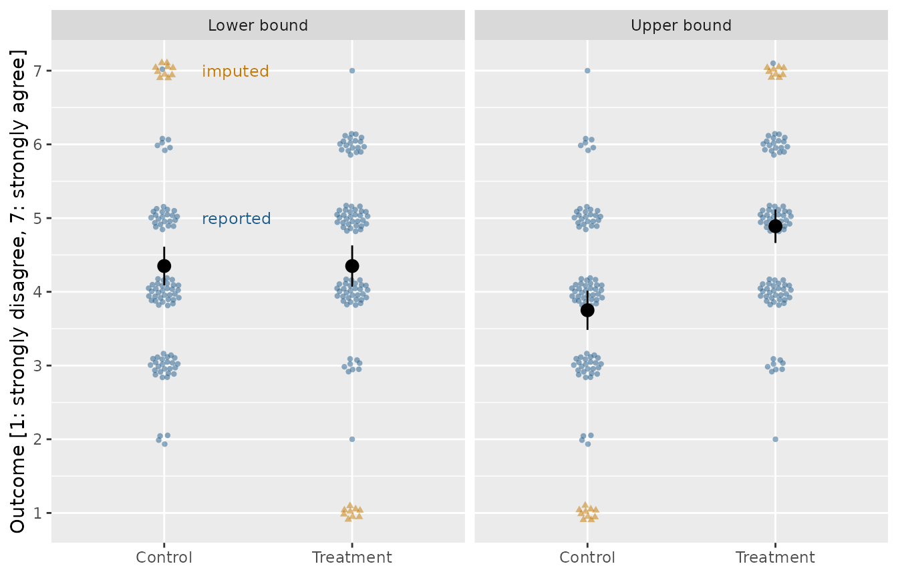

estimator_ev() reports a range of average treatment
effects rather than a point, and the range comes from filling in the
missing outcomes twice: once with the worst case for the treatment
group, once with the best. That imputation can be drawn, and drawing it
is the fastest way to see what the estimator is doing. This vignette
puts the picture and the estimates side by side and checks that they are
the same thing.
The plot uses vayr and the
difference in means uses estimatr. Both
are suggested packages rather than required ones, so if either is
missing the code below is shown but not run.
impute_extreme_values() and the
attrition_experiment data arrived in vayr 1.1.0, so the
same is true against an earlier version. The requirement lives in the
chunk guard rather than in Suggests, because a version
constraint there cannot be satisfied from CRAN until 1.1.0 is
released.
library(attrition)
library(vayr)
library(estimatr)
library(ggplot2)
library(dplyr)
#>
#> Attaching package: 'dplyr'
#> The following objects are masked from 'package:stats':
#>
#> filter, lag
#> The following objects are masked from 'package:base':
#>
#> intersect, setdiff, setequal, unionThe experiment
vayr::attrition_experiment is a simulated two-arm trial
with 200 subjects and a seven-point Likert outcome. Nineteen subjects
have no outcome, and their missingness is related to the outcomes they
would have reported, so dropping them conditions the analysis on a
post-treatment variable.
dat <- attrition_experiment
dat |> count(Z, R)
#> # A tibble: 4 × 3
#> Z R n
#> <dbl> <dbl> <int>
#> 1 0 0 10
#> 2 0 1 90
#> 3 1 0 9
#> 4 1 1 91The picture
vayr::impute_extreme_values() does the imputation and
nothing else. It returns both scenarios stacked, with a flag marking
which points were reported and which were filled in.
bounded <- impute_extreme_values(dat, outcome = "Y", assignment = "Z", range = c(1, 7)) |>
mutate(condition = if_else(Z == 1, "Treatment", "Control"))
bound_means <- bounded |>
group_by(condition, scenario) |>
reframe(tidy(lm_robust(Y ~ 1))) |>
mutate(Y = estimate)The nineteen orange points are the imputations. In the left panel they sit at the bottom of the scale for treated subjects and at the top for control subjects, which is the least favorable arrangement the data admit. The right panel reverses them. The black points are the arm means either way.
gg_df <- bounded
# Labelled in the left panel only. The colours carry over to the right one, and
# a second copy of the same two words would just be more ink.
label_df <- gg_df |>
distinct(scenario, imputed) |>
filter(scenario == "Lower bound") |>
mutate(
condition = "Control",
Y = if_else(imputed == "Outcome imputed", 7, 5),
label = if_else(imputed == "Outcome imputed", "imputed", "reported")
)
ggplot(gg_df, aes(condition, Y)) +
geom_point(aes(colour = imputed, shape = imputed),
position = position_sunflower(density = 45, aspect_ratio = 0.45),
alpha = 0.5, stroke = 0) +
geom_point(data = bound_means, size = 3) +
geom_errorbar(data = bound_means, aes(ymin = conf.low, ymax = conf.high), width = 0) +
geom_text(data = label_df, aes(label = label, colour = imputed),
hjust = 0, nudge_x = 0.2, size = 3.2, show.legend = FALSE) +
facet_wrap(~ scenario) +
scale_colour_manual(values = c("#205C8A", "#C67800")) +
scale_y_continuous(breaks = 1:7) +
labs(x = NULL, y = "Outcome [1: strongly disagree, 7: strongly agree]") +
theme(legend.position = "none")
The estimates
estimator_ev() takes the same substantive input, the
logical minimum and maximum of the outcome, and returns the two bounds
with a joint confidence interval.
ev <- estimator_ev(Y, Z, R, minY = 1, maxY = 7, data = dat)
ev
#> ci_lower ci_upper low_est upp_est low_var upp_var
#> -3.170e-01 1.430e+00 8.882e-16 1.140e+00 3.715e-02 3.106e-02tidy() puts the same object in a data frame, one row for
the interval and one for each bound, which is the form the comparison
below wants.
tidy(ev)
#> # A tibble: 3 × 8
#> term estimate std.error conf.low conf.high estimate.low estimate.high
#> <chr> <dbl> <dbl> <dbl> <dbl> <dbl> <dbl>
#> 1 bounds NA NA -0.317 1.43 8.88e-16 1.14
#> 2 lower_bound 8.88e-16 0.193 NA NA NA NA
#> 3 upper_bound 1.14e+ 0 0.176 NA NA NA NA
#> # ℹ 1 more variable: outcome <chr>The bounds are the two pictures. A difference in means run inside each panel recovers the two bound estimates to the twelfth decimal place, because filling in the missing outcomes and averaging is all the estimator does to reach its point estimates. They are the same calculation reached from two directions.
by_scenario <- bounded |>
group_by(scenario) |>
reframe(tidy(lm_robust(Y ~ Z))) |>
filter(term == "Z") |>
mutate(term = if_else(scenario == "Lower bound", "lower_bound", "upper_bound")) |>
select(scenario, term, difference_in_means = estimate, conf.low, conf.high)
by_scenario |>
left_join(tidy(ev) |> select(term, estimator_ev = estimate), by = "term") |>
select(scenario, difference_in_means, estimator_ev) |>
mutate(across(c(difference_in_means, estimator_ev), \(x) round(x, 12)))
#> # A tibble: 2 × 3
#> scenario difference_in_means estimator_ev
#> <fct> <dbl> <dbl>
#> 1 Lower bound 0 0
#> 2 Upper bound 1.14 1.14What the picture cannot show
The error bars in the plot are ordinary confidence intervals around four arm means, one panel at a time. They do not answer the question the estimator answers, which is how far the identification region has to be widened to cover the true effect at the stated confidence level.
The tempting move is to take the outermost endpoints of the two panels and call that the interval. It is wider than necessary. The Imbens-Manski interval covers the parameter with probability 0.95 rather than covering the whole identified set, and it uses the fact that the true effect cannot sit at both ends at once.
bind_rows(
by_scenario |>
summarise(interval = "Stacking the two panels",
lower = min(conf.low),
upper = max(conf.high)),
tidy(ev) |>
filter(term == "bounds") |>
transmute(interval = "Imbens-Manski", lower = conf.low, upper = conf.high)
) |>
mutate(width = upper - lower)
#> # A tibble: 2 × 4
#> interval lower upper width
#> <chr> <dbl> <dbl> <dbl>
#> 1 Stacking the two panels -0.381 1.49 1.87
#> 2 Imbens-Manski -0.317 1.43 1.75Saying the range out loud
minY and maxY here are the same two numbers
as range there, and neither function will guess them. That
is deliberate in both places. No subject in this sample answered 1, so a
function that inferred the scale from the observed data would have used
2 to 7 and reported bounds narrower than the data support. The width of
the identification region is a claim about the measurement instrument,
not about the sample.